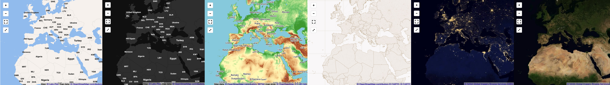

Configuring Basemap Tiles for Interactive Maps#
Configuring Globally#
You can configure global Lets-Plot options using the LestPlot.set(dictionary) method.
Where the dictionary can contain all sorts of Lets-Plot options, including basemap tiles configuration options.
Lets-Plot provides a variety of constants and functions which make configuring of basemap tiles simple:
from lets_plot import tilesets
LetsPlot.set(tilesets.LETS_PLOT_DARK)
Configuring for a Single Plot#
Use tiles parameter in the geom_livemap() function:
from lets_plot import tilesets
ggplot() + geom_livemap(tiles=tilesets.LETS_PLOT_DARK)
Vector Tiles#
Note
Vector tiles may not work with Safari. If the tiles don’t load please try disabling the NSURLSession Websocket feature (Develop -> Experimental Features -> NSURLSession Websocket) or use raster tiles.
Lets-Plot provides its own vector basemap tiles available in four variants:
color
dark
light
bw
By default Lets-Plot uses its “color” tiles.
Configure Lets-Plot vector tiles (globally or on the per-plot basis) with the help of the LetsPlot.maptiles_lets_plot(...) function:
ggplot() + geom_livemap(tiles=maptiles_lets_plot(theme='dark'))
or with the help of a constant defined in the tilesets module:
from lets_plot import tilesets
ggplot() + geom_livemap(tiles=tilesets.LETS_PLOT_DARK)
Blank Tiles#
Blank tiles show no other graphics but a solid background color which you can choose (a HEX value is expected):
ggplot() + geom_livemap(tiles=maptiles_solid(color='#C1C1C1'))
You can also use a constant defined in the tilesets module (white tiles):
from lets_plot import tilesets
ggplot() + geom_livemap(tiles=tilesets.SOLID)
Blank tiles do not require an internet connection.
Raster Tiles#
With Lets-Plot you can use ZXY raster tiles provided by 3rd party maptile services.
Warning
Always read the providers Terms of Service before using this provider’s tiles in your project.
Some services provide free of charge raster tilesets. The tilesets module in Lets-Plot contains many such tilesets pre-configured.
Again, you can use these tilesets to configure Lets-Plot globally or on the per-plot basis:
from lets_plot import tilesets
ggplot() + geom_livemap(tiles=tilesets.OSM)
OpenStreetMap#
OSM: OpenStreetMap’s Standard tile layer.
OpenTopoMap#
Map data: © OpenStreetMap contributors, SRTM | map style: © OpenTopoMap (CC-BY-SA).
OPEN_TOPO_MAP
CARTO#
© OpenStreetMap contributors, © CARTO, © CARTO.
Free for none-commercial services only (see Limitations, License).
CARTO_POSITRON,CARTO_POSITRON_HIRES: PositronCARTO_POSITRON_NO_LABELS,CARTO_POSITRON_NO_LABELS_HIRES: Positron (no labels)CARTO_DARK_MATTER_NO_LABELS,CARTO_DARK_MATTER_NO_LABELS_HIRES: Dark Matter (no labels)CARTO_VOYAGER,CARTO_VOYAGER_HIRES: VoyagerCARTO_FLAT_BLUE,CARTO_FLAT_BLUE_HIRES: Flat BlueCARTO_MIDNIGHT_COMMANDER,CARTO_MIDNIGHT_COMMANDER_HIRES: Midnight commanderCARTO_ANTIQUE,CARTO_ANTIQUE_HIRES: Antique
NASA’s Global Imagery Browse Services (GIBS)#
Imagery provided by services from NASA’s Global Imagery Browse Services (GIBS), part of NASA’s Earth Observing System Data and Information System (EOSDIS).
NASA’s Global Imagery Browse Services (GIBS).
Global Imagery Browse Services (GIBS) - API for Developers.
Global Imagery Browse Services (GIBS) API - Generic XYZ Tile Access.
GIBS Available Imagery Products.
NASA_CITYLIGHTS_2012: CityLights 2012NASA_GREYSCALE_SHADED_RELIEF_30M: Greyscale Shaded Relief (30m)NASA_COLOR_SHADED_RELIEF_30M: Color Shaded Relief (30m)NASA_TERRA_TRUECOLOR: Terra TrueColor
Examples#
Check out this notebook to see examples of various tilesets.
Configuring Raster Tiles Manually#
In addition to pre-configured tilesets you can configure and use almost any other raster tilesets provided in ZXY format.
You can do it with the help of the LetsPlot.maptiles_zxy() function.
The following code will configure ‘NASA, CityLights 2012’ tiles:
settings = dict(
url = "https://gibs.earthdata.nasa.gov/wmts/epsg3857/best/VIIRS_CityLights_2012/default/GoogleMapsCompatible_Level8/{z}/{y}/{x}.jpg",
attribution = '<a href="https://earthdata.nasa.gov/eosdis/science-system-description/eosdis-components/gibs">© NASA Global Imagery Browse Services (GIBS)</a>',
max_zoom=8
)
ggplot() + geom_livemap(tiles=maptiles_zxy(**settings))
Raster tiles configuration options:
url: ZXY tiles URL , e.g."https://{s}.tile.com/{z}/{x}/{y}.png". Where{z},{x},{y}and{s}are placeholders for zoom, coordinates and subdomain.attribution: An attribution or a copyright notice.min_zoom: Minimal zoom limit.max_zoom: Maximal zoom limit.subdomains: A list of characters where each character is interpreted as a subdomain in the times URL.
You can also provide other key-value pairs to include into the tile URL as parameters:
maptiles_zxy(url='http://maps.example.com/{z}/{x}/{y}.png?access_key={key}', key='MY_ACCESS_KEY')